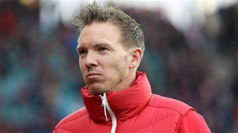
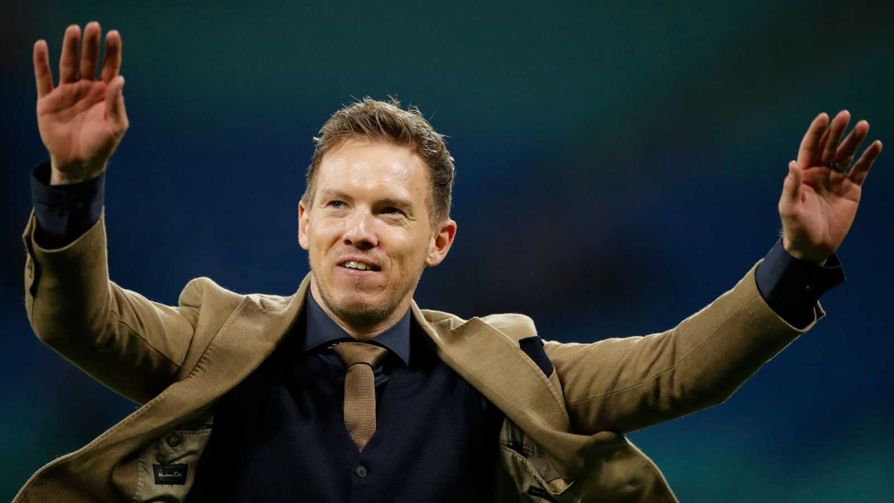

El F. C. Bayern de Múnich ha tenido, contando a su actual técnico, un total de 55 entrenadores de fútbol a lo largo de su historia. El primer entrenador que tuvo el club fue el holandés Willem Hesselink, que dirigió al equipo desde 1902 a 1905. La mayoría de los entrenadores del club han sido alemanes, siendo el primero Hans Tauchert en 1933. Las nacionalidades principales de los entrenadores no alemanes han sido la húngara (6 técnicos), inglesa (5 técnicos), austriaca (4 técnicos), holandesa (3 técnicos), croata (3 técnicos), italiana (2 técnicos), escocesa (1 técnico), danesa (1 técnico), española (1 técnico) y francesa (1 técnico). Solo han dirigido entrenadores europeos en la historia del club. El Bayern ha tenido 24 entrenadores desde su promoción a la Bundesliga (Alemania) en 1963. Udo Lattek, Franz Beckenbauer, Giovanni Trapattoni, Ottmar Hitzfeld y, el más reciente, Jupp Heynckes han sido dos o más veces directores técnicos. El actual entrenador es Julian Nagelsmann, ex entrenador del RB Leipzig, tras la salida de Hans-Dieter Flick el 30 de junio de 2021.
A los 33 años, Julian Nagelsmann ha dado el último paso para acceder al más alto nivel: después de Hoffenheim y RB Leipzig, el joven entrenador dirigirá a uno de los clubes más grandes del mundo, el Bayern de Múnich. A una edad en la que todavía podría ser futbolista, Nagelsmann ha ido quemando etapas a una velocidad increíble. Entrenador más joven de un equipo de primera división de un gran campeonato europeo a los 28 años, técnico más joven en la Liga de Campeones a los 31 años con el Hoffenheim, entrenador más joven en alcanzar una semifinal de Champions a los 33 con el Leipzig, los récords de Nagelsmann impresionan. Antes de su fichaje por parte del Bayern, hecho que se hizo oficial este martes 27 de abril, los medios de comunicación habían especulado con su desembarco en la Premier League o en el FC Barcelona. Y pensar que su nombramiento en febrero de 2016 al frente del primer equipo del Hoffenheim, que atravesaba un mal momento en la Bundesliga, fue visto con escepticismo.
“Una idea descabellada”, “un chiste de relaciones públicas”, llegaron a titular los periódicos, puesto que el joven preparador solo tenía en su palmarés un título, como campeón de Alemania sub-19. De hecho, después de ese título, el Bayern de Múnich intentó ficharlo para sus categorías inferiores. Nagelsmann, que apuntaba a lo más alto, lo rechazó. Sin embargo, no había duda de su deseo de entrenar algún día al conjunto más laureado del fútbol bávaro. “Estoy muy, muy, contento en mi vida y el Bayern me haría quizá todavía más feliz”, decía sonriente en 2017. Tras evitar el descenso en su primera campaña en la Bundesliga, el nacido en Baviera, la región donde se encuentra Múnich, convirtió al Hoffenheim en el equipo revelación de la campaña 2016-17, consiguiendo contra todo pronóstico el cuarto puesto por detrás de Bayern, Leipzig y Borussia Dortmund. Pero pronto el Hoffenheim se volvió demasiado pequeño para su ambición y en 2019 aceptó una oferta del Leipzig, equipo al que llevó inmediatamente a las semifinales de la Champions y al cual metió dos veces en el podio de la Bundesliga. Exdefensa de gran estatura (1,90 m), lesionado de gravedad en la rodilla con 20 años y obligado a renunciar a una carrera profesional, Nagelsmann le debe a Thomas Tuchel haberlo lanzado, de forma un poco involuntaria, a su trayectoria de entrenador. El actual técnico del Chelsea fue su entrenador en el equipo filial del Augsburgo cuando se lesionó.